MOSFET Audio Amplifier and Power Supply Design
Final Course Project – Electronic Circuit Design
Team size: 2
My primary role: Audio Amplifier Circuit Designer
Project Objective
This capstone project for the Electronic Circuit Design course required the practical application of MOSFET knowledge. The project was divided into two core parts: designing a stable dual power supply and designing a MOSFET-based audio amplifier to be powered by it.
Design & Implementation Process
The project followed a standard hardware design workflow:
- Research and Simulation: Both the dual power supply and the amplifier circuits were first researched, designed, and simulated in Proteus to verify their theoretical performance.
- Prototyping: The simulated circuits were then built on a breadboard for real-world testing and validation of the results.
- PCB Design: Finally, custom PCBs were designed for both circuits to ensure stable operation, minimize noise, and create a robust final product.
A. Dual power supply
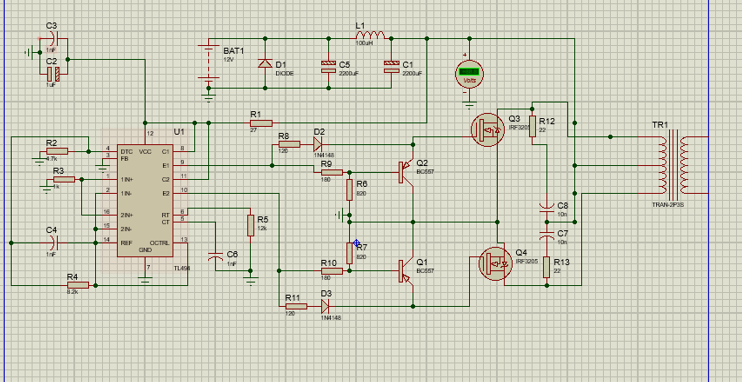 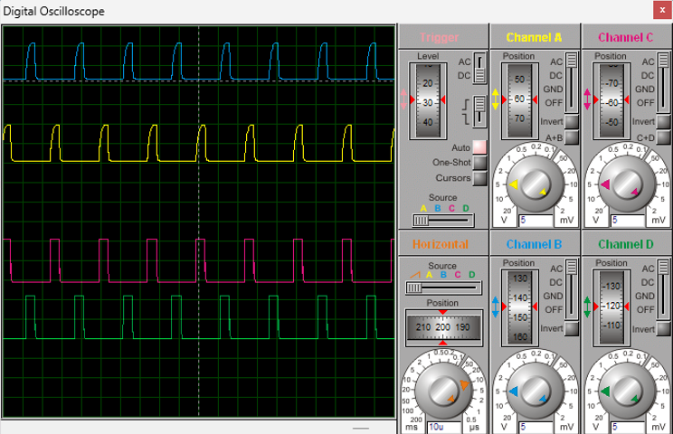 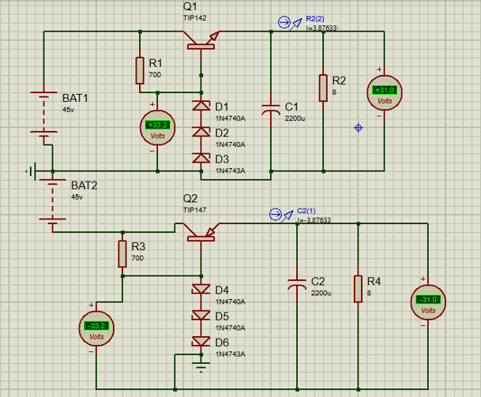B. Audio Amplifier
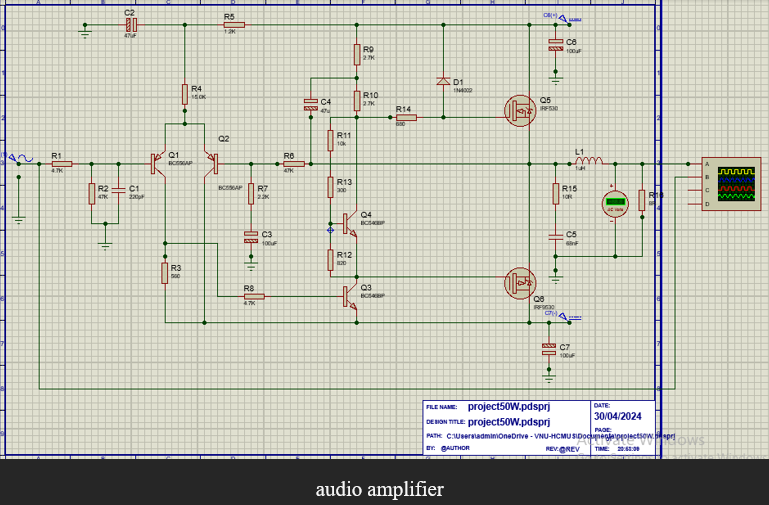 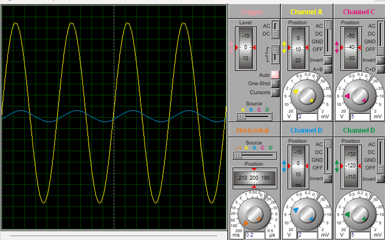 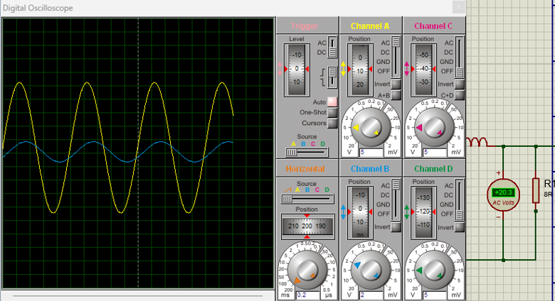A. Dual power supply
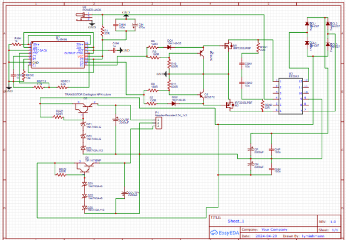 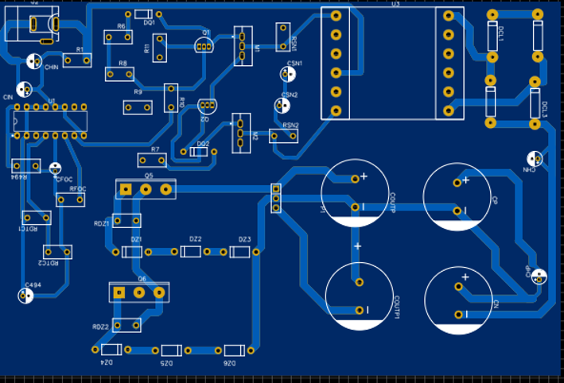
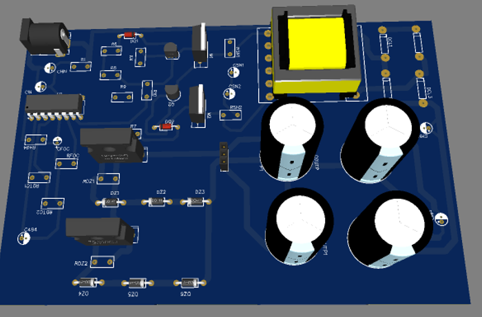
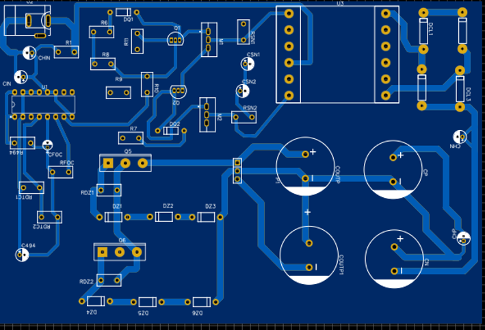
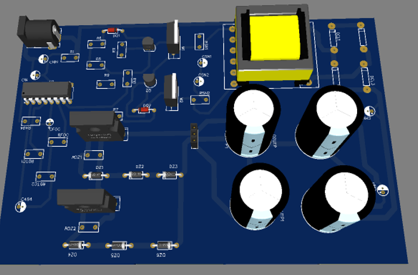
B. Audio Amplifier
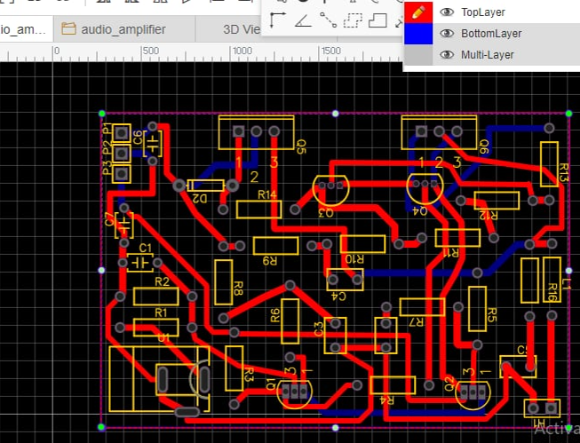 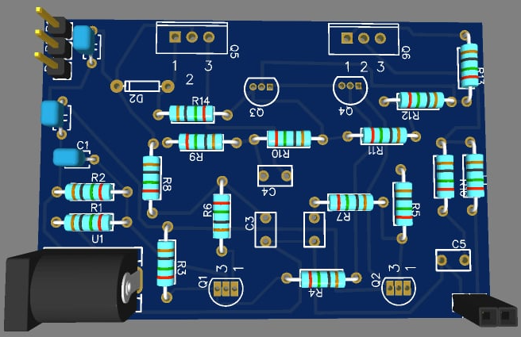
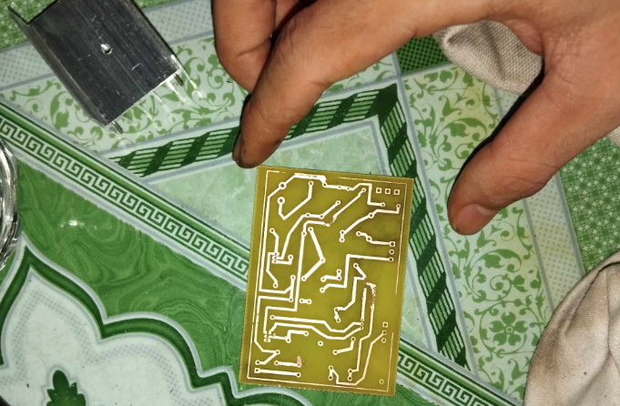
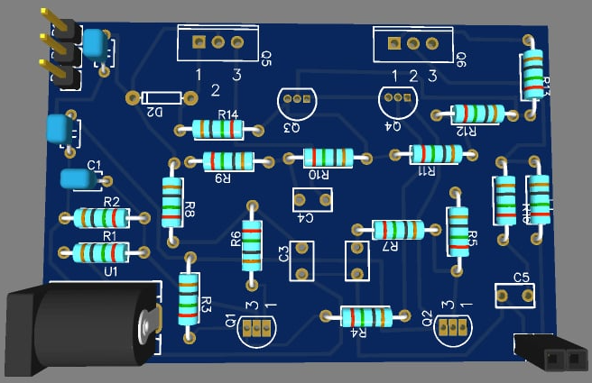
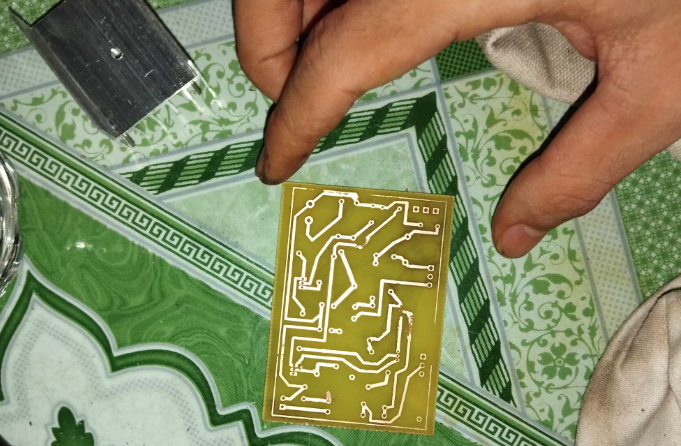
My Contributions & Technical Details
My main responsibility was the design of the audio amplifier circuit. The process included:
- Researching and simulating a 50W MOSFET-based audio amplifier circuit in Proteus.
- Designing the PCB layout for the amplifier, focusing on optimal component placement and trace routing to reduce signal interference.
- Integrating the amplifier with the team's custom-designed dual power supply for testing.
Results & Technical Pivot
During testing, we discovered that the custom-built dual power supply was not stable enough to reliably drive the 50W amplifier to its full potential. Faced with this challenge, I adapted the approach.
"Instead of abandoning the core objective, I pivoted to a simpler, more achievable design: a Class-A audio amplifier. This linear design runs with continuous current through the MOSFET and does not require a dual power supply."
This revised circuit, while lower in power, successfully demonstrated the core principles of MOSFET amplification. It is a design commonly used in simpler, high-fidelity applications like headphone amplifiers or for demonstrating fundamental concepts.
Project Outcome
Although the initial 50W amplifier was not fully realized due to power supply limitations, the project was highly praised by the instructor for the extensive research, the problem-solving process, and the successful implementation of the alternative Class-A amplifier. The project received a high grade, acknowledging the significant learning and technical exploration involved.